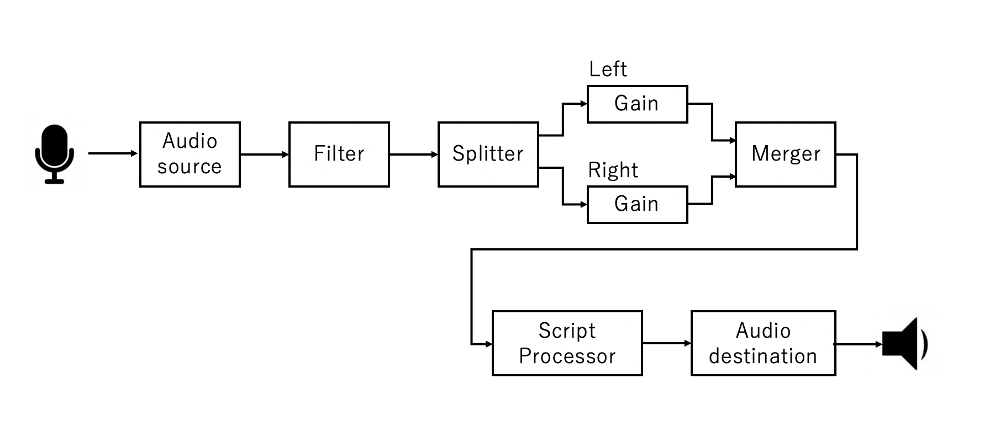

Web MIDI API 実験室
getUserMediaを使って、マイクの音をいろいろ処理してスピーカから再生
このプログラムはスピーカボリュームが大きいとハウリングします
マイクの音を、getUserMediaで取り込み、Audio APIでちっとした加工をして、スピーカーから音を鳴らします。この実験では、
マイクの音を取り込む
ステレオの音にフィルターをかける
Splitterで左右に分解する
分解した音、それぞれに音の大きさ（ボリューム）をGainノードで調整する
Mergerノードで、もう一度左右を結合する
Script Processorで波形を表示する
スピーカから出力する
という順番で処理します。

Web Audio APIのプログラム
{
//Audio Api を立ち上げる //webkitAudioContext()は古い！と怒られる
audioContext = new AudioContext();
//2ch のスプリッター、ステレオを２つのモノラルにする
splitter = audioContext.createChannelSplitter(2);
//2ch のマージャー、２つのモノラルをステレオにする
merger = audioContext.createChannelMerger(2);
// オーディオデータを直接扱うためのnodeの定義バッファーサイズを1024,
// 入力チャンネル数を２、出力チャンネル数を２とする
node = audioContext.createScriptProcessor(1024, 2, 2);
// フィルターの設定
filter = audioContext.createBiquadFilter();
filter.type = 'lowpass'; // Low-pass filter. See BiquadFilterNode docs
filter.frequency.value = 440; // Set cutoff to 440 HZ
//左チャンネル用のボリューム
gainL = audioContext.createGain();
gainL.gain.value = 0.1;
//右チャンネル用のボリューム
gainR = audioContext.createGain();
gainR.gain.value = 0.1;
navigator.getUserMedia(
mConstraints,
function(stream){ //getUserMediaの呼び出しに成功したら、この関数が呼ばれる
//getUserMediaで受け取った音(stream)を、audiosourceにつなぐ
audiosource = audioContext.createMediaStreamSource(stream);
//audiosourceをフィルターにつなぐ
audiosource.connect(filter);
//フィルターをスプリッターにつなぐ
filter.connect(splitter);
//スプリッターのLch(ゼロ番目)の出力をgainLにつなぐ
splitter.connect(gainL, 0);
//スプリッターのRch(イチ番目)の出力をgainLにつなぐ
splitter.connect(gainR, 1);
//gainLの出力(ゼロ番目)をmergerのLch(ゼロ番目)の入力につなぐ
gainL.connect(merger, 0, 0)
//gainLの出力(ゼロ番目)をmergerのRch(イチ番目)の入力につなぐ
gainR.connect(merger, 0, 1)
//mergerの出力をnodeにつなぐ
merger.connect(node);
//nodeの出力をスピーカにつなぐ
node.connect(audioContext.destination);
//データ処理関数の定義
node.onaudioprocess=process;
},
//getUserMediaの呼び出しに失敗したら、この関数が呼ばれる。
function(e) { // I can't use getUserMedia
console.log(e);
}
);
}
getUserMediaのオプションは以下の通り
// constraints
var mConstraints = {
video: false,
audio: { echoCancellation: false } // エコーキャンセラ無効化
};
// constraints (Chrome)
if (window.chrome) {
mConstraints = {
video: false,
audio: {mandatory: {echoCancellation : false, googEchoCancellation: false}}
};
}
Audio Buffer が一杯になったらi以下関数が呼ばれる
function process(data){
var procsize = data.inputBuffer.length;
var inbufL = data.inputBuffer.getChannelData(0);
var inbufR = data.inputBuffer.getChannelData(1);
var outbufL = data.outputBuffer.getChannelData(0);
var outbufR = data.outputBuffer.getChannelData(1);
// 入力を出力にコピーする
for(var i=0; i